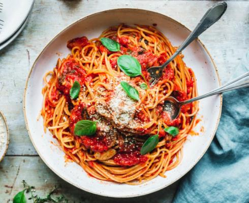

Pasta mit gebackenen Tomaten

Beschreibung
Pasta mit gebackenen Tomaten Tomaten
Zutaten
- 500g Linguine
- 3 EL Öl
- 1 Zwiebel
- 2 Knoblauchzehen
- 1,5kg Tomaten
- 2 TL italienische Kräuter, getrocknet
- 2 TL Rohrzucker
- 1 TL Salz
- 1 TL schwarzer Pfeffer
- 1 Handvoll Basilikum, frisch
Schritte
- Backblech mit Olivenöl bestreichen. Zwiebeln würfeln, Knoblauch klein hacken und beides gleichmäßig auf dem Backblech verteilen.
Tomaten halbieren, den Strunk entfernen und mit etwas Abstand zueinander auf das Backblech legen.
- Tomaten bei 200 Grad ca. 30 Minuten im Ofen backen, aus dem Ofen nehmen und kurz abkühlen lassen. In der Zwischenzeit können die Linguine vorgekocht werden.
- Die Haut der Tomaten abziehen, das Tomatenfleisch sowie den entstandenen Saft in eine große Schüssel geben.
Mit Salz und Pfeffer würzen und die Tomaten mit einem Stampfer zerdrücken.
- Vorgekochte Linguine sowie frischen Basilikum ergänzen, alles gut verrühren und genießen!